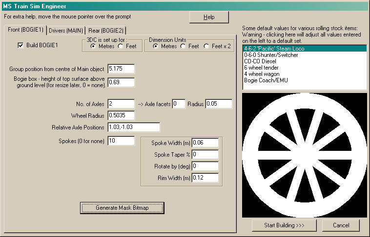
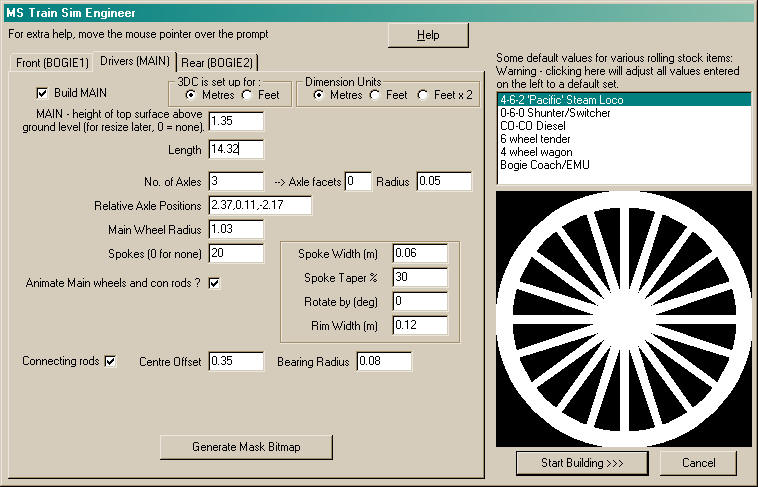
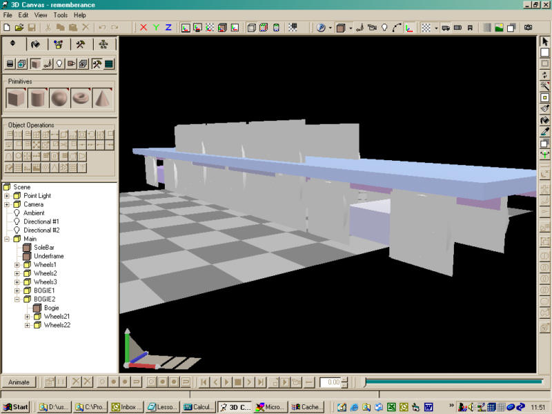
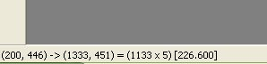

Now we can take some measurements from the plan, that are needed as input to the MSTS Engineer plugin:
- Wheel diameters are already given on the plan 3'6" (1.07m) and 6'9" (2.06m)
- The bogie wheels are 3'4.5" (1.03m) either side of the bogie swivel points.
- The front bogie is 537 pixels (5.175m) in front of the pivot centre
- The rear bogie is 517 pixels (4.982m) behind the pivot centre
- Bogie tops are about 0.69m above the rail
- The wheel rim width is about 12cm
- The driving wheels, starting from the front, are at the following positions relative to the pivot: +2.37, +0.11, -2.17
- The footplate (ignoring where it goes up over the drivers) is 1.35m above the rail top and it is about 14.32m long (ignoring the buffers)
- The driver con rod is 0.35m from the wheel centre (for outside cylinders, the offset is half the cylinder stroke measurement)
- Spokes look to be about 0.06 wide at the base and tapered slightly (I'll ignore this for the bogies)
front bogie pivot from axis 5.175m
front bogie height 0.69m
front Bogie wheel radius 0.535m
front bogie 2 axles spacing 1.03 and -1.03
front Bogie wheel no of spokes 10
front Bogie wheel spoke width 0.06m
front Bogie wheel rim width 0.12m
-------------------
footplate height 1.35m (ignoring where it goes up over the drivers for the moment)
footplate length 14.32m
No of axles 3
Drivers - 3 axles at +2.37, +0.11, -2.17 relative to the pivot point
Driving wheel radius 1.03m
no of spokes 20
spoke width 0.06m (at base, and taper slightly)
rim width 0.12m
conrod offset 0.35m (for outside cylinders, the offset is half the cylinder stroke measurement)
-------------------
rear bogie from axis -4.982m
rear bogie height 0.69m
rear Bogie wheel radius 0.535m
rear bogie 2 axles spacing 1.03 and -1.03
rear Bogie wheel no of spokes 10
rear Bogie wheel spoke width 0.06m
rear Bogie wheel rim width 0.12m
Phew - finally we start up 3D Canvas!
Select the MSTS Engineer plugin from the Plugins menu. The way to use this plugin is to select one of the pre-defined options that is closest to what you are about to build (for us this is the 4-6-2)
Now fill in the numbers...
Bogies (this page applies to both BOGIE1 and BOGIE2 - the latter has a negative position relative to the Main object)

Pressing the "Generate Mask Bitmap" button draws an image of the spoked wheel on the right and copies it onto the windows clipboard - use your paint program to paste in a new image and save this file for later.
Drivers:

You will notice here the vertical centre spoke - on the plan it shows spokes either side of the centre when the rod is at its lowest position so I need to rotate the wheel by 360/20/2 = 9 degrees this goes in the box under the taper % option.
Now press the Generate Bitmap mask again and save this wheel mask somewhere safe.
Finally, press the "Start Building>>>" button and wait a few seconds.... This has just built 1798 polygons worth of model for you!

Now save.....
One good thing about MSTS Engineer is that it remembers what you did last time. If your model is not right, start a new Scene and run it again - your previously entered values are still there for correction - just don't select one of the templates or you will lose them.
Probably enough for a first attempt...
Comments/Questions?
Ianm42: "For Paint Shop Pro v7 the measuring can be carried out in a similar manner, using either the selection box tool, crop tool or preset shape drawing tool. However, the required information is only shown while you have the mouse button pressed. As soon as you release the button, the information disappears. In the example shown below, the size of the selection box is 1133x5 (used for calculating the rotation angle needed to square up the drawing)"

mikesimpson: "Thanks for the first lesson - Just a couple of comments, especially as some newcomers will be attempting this model, I am also building Remembrance.
1. I usually model in feet/ins because all my old UK plans are in these measurements, so I have 3D Canvas set up for these sizes. I suspect others may do the same, so perhaps you should have advised users to set their program up in metres first."
(This has since been changed and the Engineer plugin now accepts feet/inches - even when modelling in metres.)
2. Your instructions do not mention making Bogie 2 in Train Sim Engineer, you give the dimensions at the beginning, but the instructions go straight from building Drivers (Main), Generate their Bitmap, then click 'Start Building' - This may confuse some."